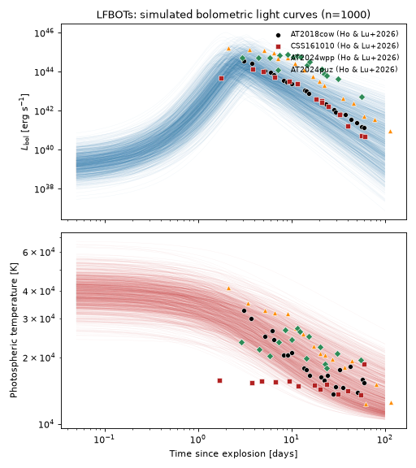
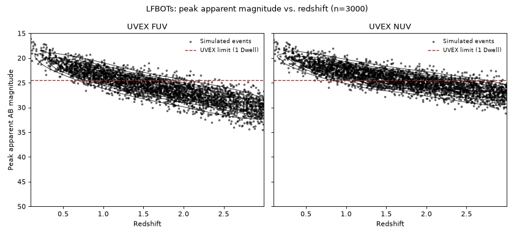
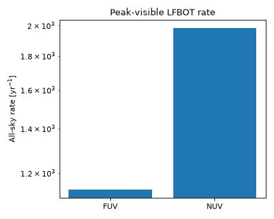

Luminous Fast Blue Optical Transients#
Luminous fast blue optical transients (LFBOTs), typified by the prototype AT2018cow, are modeled here as a rapidly-evolving, cooling blackbody photosphere – a phenomenological description of their fast rise/decline (\(\lesssim10\) day timescales), persistently blue colors, and, in several cases, non-thermal emission pointing to a central engine rather than radioactive decay [1].
This population is implemented by
LuminousFastBlueOpticalTransient, pairing
LFBOTCoolingBlackbodySED with the rate/duration
metadata described below.
Quick Facts#
Quantity |
Value |
Source |
Notes |
|---|---|---|---|
Rate |
\(10\ \mathrm{Gpc^{-3}\,yr^{-1}}\) (constant in \(z\)) |
Reported LFBOT rates span more than two orders of magnitude across differing selection
criteria: Coppejans et al.[3] find \(<300\ \mathrm{Gpc^{-3}\,yr^{-1}}\) (PTF) and
\(700\)-\(1400\ \mathrm{Gpc^{-3}\,yr^{-1}}\) (PS1-MDS); the delayed-dynamical-instability
model of Klencki and Metzger[4] predicts \(15\)-\(300\ \mathrm{Gpc^{-3}\,yr^{-1}}\);
Perley et al.[2] and Ho and Lu[1] report the lowest rates,
\(0.9\)-\(12.5\ \mathrm{Gpc^{-3}\,yr^{-1}}\), which is adopted here as
|
|
Redshift limit |
\(z = 3\) |
– |
Chosen to safely bound the population relative to the SED’s own (much shorter) intrinsic rise/decline timescales. |
Duration |
100 days |
– |
Generous relative to the SED’s own rise/decline timescales, to safely bound the slowly fading power-law tail. |
Rate uncertainty: CLU vs. BTS
Volumetric LFBOT rates in the literature come from two different ZTF-era surveys, with different selection functions, that nonetheless both count AT2018cow itself among their events:
The Census of the Local Universe (CLU) experiment is volume-limited: it targets galaxies out to a fixed distance regardless of apparent brightness, so it is more complete for intrinsically fainter events but probes a smaller total volume.
The Bright Transient Survey (BTS) is magnitude-limited: it is complete down to a fixed apparent magnitude regardless of distance, so it reaches a much larger volume but is biased against faint/fast-fading events – exactly the population LFBOTs belong to.
Ho et al.[5] derive rates from both: \(2.7\)-\(546\ \mathrm{Gpc^{-3}\,yr^{-1}}\) from CLU, and \(0.31\)-\(85.3\ \mathrm{Gpc^{-3}\,yr^{-1}}\) from BTS. Both ranges are wide because each survey’s LFBOT sample is small (a handful of events), so the rate is dominated by Poisson/small-number uncertainty rather than by the selection function itself. Perley et al.[2] later revise the BTS estimate down to a narrower \(0.9\)-\(12.5\ \mathrm{Gpc^{-3}\,yr^{-1}}\), using a substantially larger BTS-selected sample than Ho et al.[5]’s original estimate.
This population adopts Perley et al.[2]’s revised BTS range, rather than Ho et al.[5]’s original BTS range or either paper’s CLU range, purely because it is built from more events and is therefore the most statistically robust of the three – not because BTS’s magnitude-limited selection is judged astrophysically preferable to CLU’s volume-limited one.
SED Model#
LFBOTCoolingBlackbodySED pairs a Gaussian-rise/power-law
decline bolometric light curve
(GaussianRisePowerLawLightcurve) with a
cooling blackbody photosphere,
The cooling law has the same functional form used for the other cooling-blackbody SEDs in this
codebase (see VillarCoolingBlackbodySED), but with the
cooling timescale fixed to the light curve’s own peak time \(t_\mathrm{peak}\) rather than left
as a separate free parameter, since LFBOT light curves are too fast and too sparsely sampled to
usefully distinguish the two. This choice, together with the default priors below, follows the
bolometric light curves Ho and Lu[1] compile for six known LFBOTs: a late-time
\(L_\mathrm{bol}\propto t^{-3}\) decline with peaks shorter than about 10 days (CSS161010 and
“puz”), a peak bolometric luminosity ranging from \(10^{44}\ \mathrm{erg\,s^{-1}}\)
(CSS161010) to around \(2\times10^{45}\ \mathrm{erg\,s^{-1}}\) (“wpp”), and a blackbody
temperature evolving post-peak roughly as \(T\sim t^{-1/3}\) (CSS161010 was closer to constant
temperature; AT2018cow and “qfm” were both \(\sim t^{-1/3}\)) [1].
Parameter |
Symbol |
Prior |
Notes / Source |
|---|---|---|---|
|
\(A\) |
Normal(\(\log_{10}(L_0/\mathrm{erg\,s^{-1}})\); mean=44.5, \(\sigma\)=0.5) |
Peak bolometric luminosity, spanning the \(\sim10^{44}\)-few \(\times10^{45}\) erg/s range [1]. |
|
\(t_\mathrm{peak}\) |
LogNormal(\(\log_{10}(t_\mathrm{peak}/\mathrm{d})\); mean=:math:log_{10}3, \(\sigma\)=0.1) |
Time of peak bolometric luminosity, log-normal around a few days with small scatter. |
|
\(\alpha_\mathrm{decline}\) |
Uniform(2, 4) |
Post-peak decline index; late-time light curves broadly consistent with \(t^{-3}\) [1]. |
|
\(T_0\) |
LogNormal(\(T_0/2\times10^4\,\mathrm{K}\); mean=0, \(\sigma\)=0.15) |
Photospheric temperature at \(t=0\) (the \(T(t)\to T_0\) limit). |
|
\(T_\mathrm{floor}\) |
LogNormal(\(T_\mathrm{floor}/10^4\,\mathrm{K}\); mean=0, \(\sigma\)=0.01) |
Asymptotic late-time temperature, tightly centered on \(10^4\) K. |
|
\(\alpha_T\) |
Uniform(0, 1/3) |
Late-time cooling index; \(\sim1/3\) is a reasonable fit for most events (e.g. AT2018cow) [1]. |
Simulated Light Curves#
The plot below draws 1000 random parameter realizations from the priors above and shows the resulting bolometric light curves and photospheric temperatures, against the observed bolometric light curves and photospheric temperatures of three known LFBOTs – AT2018cow, AT2024wpp, and AT2024puz – compiled by Ho and Lu[1].
(Source code, png, hires.png, pdf)
{kind=link}
{kind=link}

Observability Summary#
Below are the redshifts \(z\) and corresponding bandpass calculated peak apparent AB magnitudes \(m_\mathrm{AB}\) of 3000 simulated LFBOTs drawn from the priors above, with the UVEX 1 Dwell limit of \(m<24.5\) overplotted. Findings here justify our confidence in a \(z=3\) redshift limit for this population.
(Source code, png, hires.png, pdf)
{kind=link}
{kind=link}

The anticipated rate of LFBOTs detectable by UVEX at these limits is as follows assuming that any event above the \(m<24.5\) limit is detectable, and that the population is isotropic and homogeneous in comoving volume out to \(z=3\):
(Source code, png, hires.png, pdf)
{kind=link}
{kind=link}
